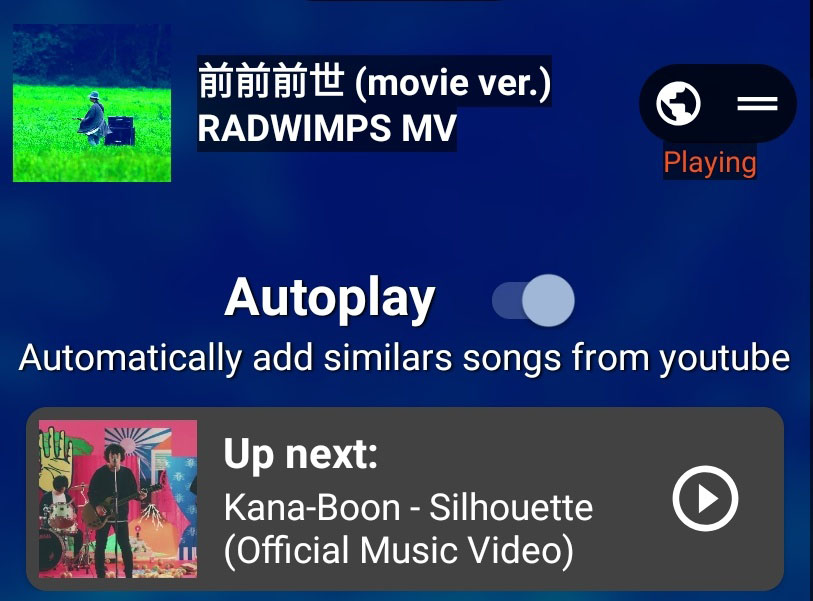
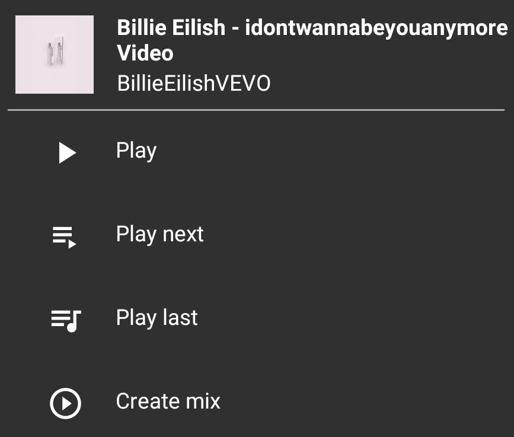
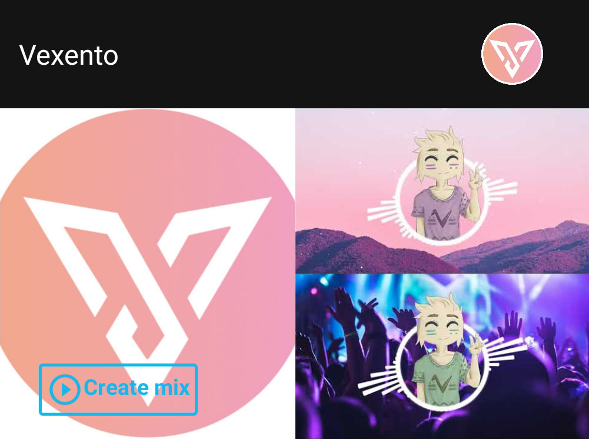
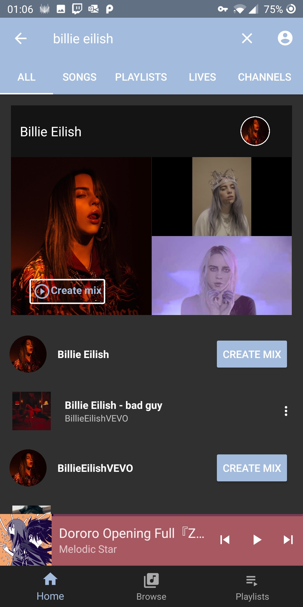
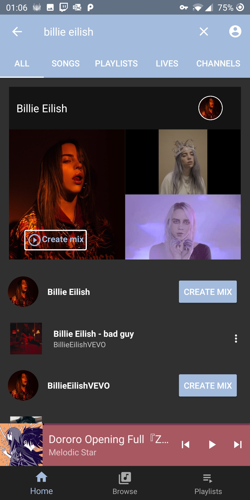
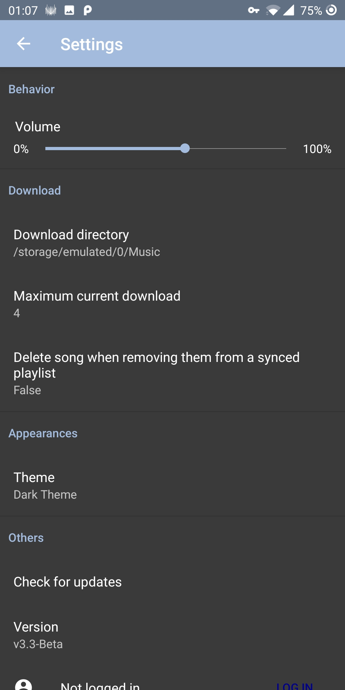
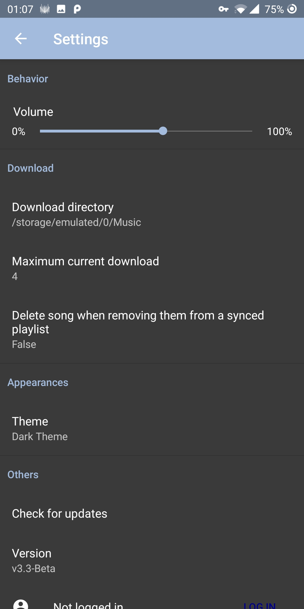

Opus
Un lecteur de musique pour android qui peut lire des musiques depuis youtube ou depuis des fichiers mp3.
TéléchargerTélécharger des musiques / Synchroniser des playlists
L'application vous permet de télécharger l'audio de n'importe quelle vidéo présente sur youtube. Vous pouvez télécharger les musiques une à une ou vous pouvez télécharger une playlist entiere.
Vous pouvez aussi garder une playlist synchronisée. A chaque fois qu'un changement est fait sur la playlist youtube, ces changements se mettent à jours localement sur votre téléphone.

Chromecast Beta
Contrôler la musique depuis plusieurs appareils dans l'intégralité de la maison. Ne laissez plus vos amis ce battre pour contrôler la musique.
Pour le moment, le chromecast ne fonctione pas.
PS : Les menus vont changer dans un futur proche donc il n'y a pas de screenshot pour le moment. A la place, vous pouvez observer ce magnifique raton laveur.
Autoplay
Vous ne savez pas quoi écouter après ? Ne vous en faites pas, l'application va trouver quelque chose pour vous.
Mix
Créer une playlist contenant des musiques similaires à celles que vous écoutez. Un peu comme les mixes youtubes.
Mix d'artiste
Créer une playlist avec les meilleurs musiques d'un artiste de votre choix.
Modifier les metadatas
Vous pouvez éditer manuellement les metadatas des musiques que vous avez localement ou vous pouvez télécharger ces métadatas directement depuis youtube.

Screenshots


 

 


Open Source
Le code source peut être trouvé sur github. N'hésitez pas a signaler les bugs, demander de nouvelles fonctionnalités ou faire des pull-requests.
Télécharger l'application
Vous pouvez trouver la dernière version de l'application ici. Après l'avoir installée, Opus se mettra à jour automatiquement.